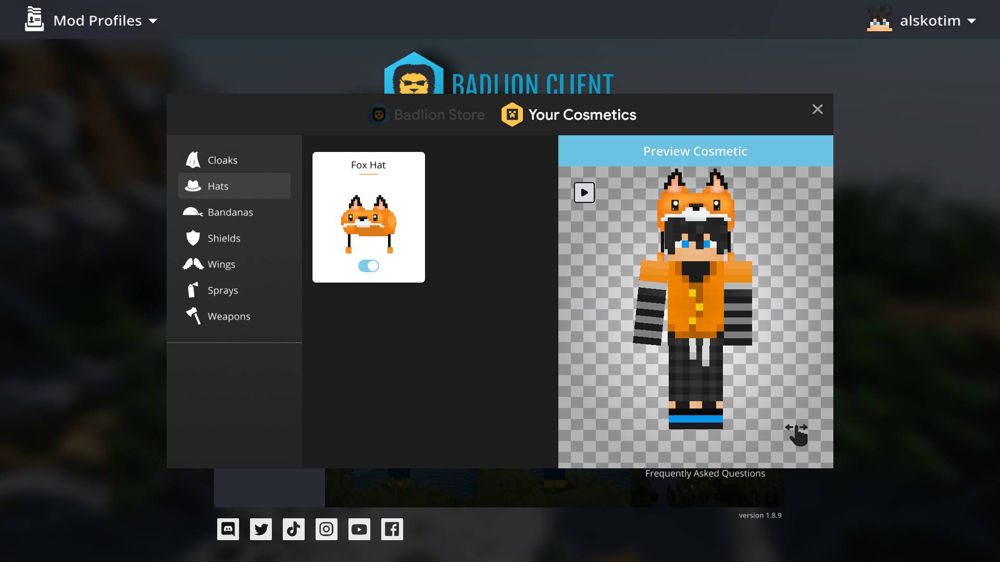

Hier sieht man den Client im Startmenü. Man kann zwischen Singleplayer und Multiplayer entscheiden. Auf Cosmetics sieht man seine Cosmetics, die man dort ein und ausstellen kann. Über den Store kann man sich neue Cosemtics oder andres kaufen. Wenn man auf Language geht kann man seine Ingame-Sprache einstellen, dieses kann man jedoch auch unter Options -> Languages. Badlion hat einen Replay-Mod mit dem man sein Ingame-Geschehen filmen kann, dieses erreicht man über den Replay-Viewer. In der Mitte des Startmenüs kann man immer Aktuelles finden, welche Updates, Fixes, Anfragen, Neues usw... es gibt. Über FAQ kommt man zu Forum und über Cloaks und Wings zum Shop.
Auf dem Bild sieht man, wenn man mit dem Client in einer Welt(auf einme Server ist). Ich lass mir verschiedene Mods auf dem Bildschirm anzeigen. Oben links sehe ich meinen Maus-CPS, die obere Anzeige ist für den Linksklick/Schlagen/Abbauen und die untere Anzeige ist der Rechtsklick/Blocken/Plazieren. Ich habe den Hintergrund der anzeige weiß und die Umrandung und den Namen mit einem Chroma effekt gemacht. Neben der CPS-Anzeige sehe ich ob ich ToggleSprint aktiviert habe, das heißt, egal ob ich in Minecraft die Sprint-Taste drücke oder nicht, sondern nur W/Lauftaste, ich werde immer spirinten. Links am Rand sehe ich welche Rüstung ich anhabe und welches Item ich gerade in meiner Mainhand habe und wie viel Durability das jeweilige Piece hat. Dies kann sehr nützlich in der Ego-Perspektive sein. Oben rechts sehe ich die Uhrzeit, meine FPS-Anzahl und meinen Server-Ping, wenn ich auf einem Server spiele.
In meiner Hotbar sieht man ein UHC-Kit.
Hier sieht man, wenn man sich den Client heruntergeladen hat, den Login-Screen. Wenn man einen Minecraft-Account besitzt, aber keinen Badlion-Account, dann muss man unten auf registrieren klicken, ansonsten meldet man sich einfach an.

Hier findet man verschiedene Cosmetics. Es gibt 6 verschiedene Charakter Cosmetics und Sprays. Die Charakter Cosmetics kann man an seinen Charakter anziehen, von jeder Kategorie aber nur 1. Es gibt Cloaks, Hats, Bandanas, Wings, Shields und Weapons. Unter der einzelnen Kategorie kann man die Cosmetics ein und aus stellen. Rechts von der Auswahl sieht man dann eine Preview von seinem Charakter. Um Cosmetics zu bekommen, muss man diese sich im Store kaufen. Jeden Tag findet man neue und auch Youtuber, welche Partner mit Badlion sind, können eigene Cosmetics erstellen und auch ein Paar pro Monat kostenlos verschenken.

Auf diesem Bild sind alle größeren BAC-Server. Wie sonst auch sieht man bei jedem Server links von der Ping-Anzeige (Die grünen Balken) die Spieleranzahl - wie viele auf den Server drauf kommen (bzw. wieviel der Server aufnimmt) und wie viele aktuell auf dem Server sind. Unter der Anzeige sieht man die Anzahl der Spieler, die mit dem Badlion-Client spielen und registriert wurden.